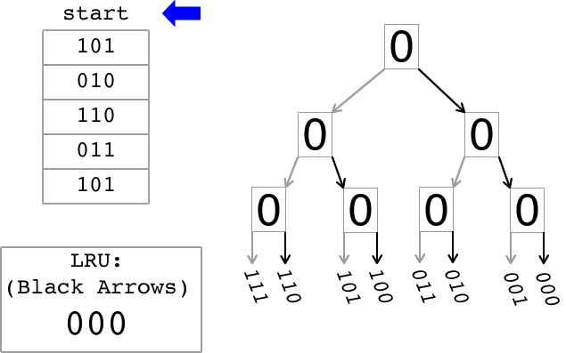
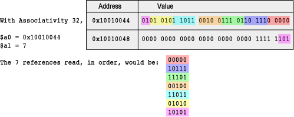
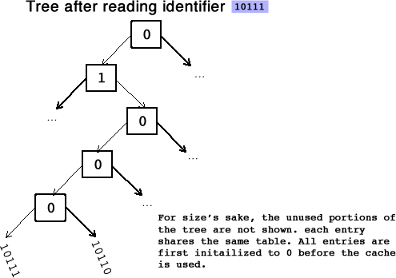

When swapping out an entry in an associative cache, it is ideal to swap out the least recently used entry, since it is the least likely entry to be used again. However, the implementation of a hardware mechanism that identifies the actual Least Recently Used (LRU) entry is too computationally expensive, increasing memory latency. Due to the time constraints involved, a variety of LRU approximation methods exist. A specific variation of such algorithms uses a tree to determine an LRU approximation and is used in the IBM POWER4 architecture. In this assignment you will implement this approximation algorithm in assembly.
The animation below illustrates how the tree-based LRU approximation algorithm works. On the left there is a sequence of memory references. In this simplified view, each memory reference contains a bit field that identifies the entry in a cache set that is being referenced. On the right, there is a binary tree that is used to keep track of the Most-Recently Used (MRU) entry and also to approximated the Least Recently Used (LRU) entry. The bits stored in each node of the binary tree are updated as explained below. The grey arrows indicate a path to the MRU entry while the black arrows indicate a path to the LRU entry. The box in the lower left of the animation displays the LRU approximation after each reference is processed as indicated by the blue arrow.
In order to implement this tree-based algorithm for LRU approximation, the n entries in a set in an n-way set-associative cache are divided into 2 separate groups recursively until each group contains only one entry at the leaves of the tree. Each node of the binary tree stores one bit to indicate which direction to follow to find the tree leaf representing the least-recently used entry. This lab will use the following convention: a node with a "0" indicates that the left path should be followed to find the most-recently used entry, while a node with a "1" indicates that the right path should be followed. In the animation the grey arrows indicate the path to the most recently used entry. Thus a traversal from the root of the tree that goes left on a "0" node and goes right on a "1" node leads to the MRU entry. However what the algorithm seeks to compute is an approximation to the LRU entry. Therefore to find a good LRU approximation simply execute a traversal from the root of the tree following right on a "0" node and following left on a "1" node (bold arrows in the animation). The entry found by this traversal is the entry that would be replaced when a cache swap is needed.
A cache is referred to as being n-way set associative if, given a memory address requested by the processor, there are n possible cache entries that could be used to store data for that address. The tree-based LRU approximation algorithm that you will write will return the LRU entry that would be returned after a stream of memory references. Each memory reference is to one of the entries represented by the leafs in the tree.
For an n-way set associative cache, each entry identifier will be log2(n) bits. While logarithms may be challenging to compute in assembly, it is fairly easy to compute a base 2 logarithm for powers of two (which, as noted below, are our only test cases), using the algorithm below where associativity is a 32-bit value:
input: associativity
counter <-- 0
loop:
if bit 0 of associativity is set,
go to done
shift associativity right 1
increment counter
jump loop
done:
return counter
Binary trees are simple to create and traverse in MIPS, and far more memory efficient than storage using bytes or words. A binary tree can begin as a contiguous block of space, the first bit of which is designated the root. From there, tree traversal is trivial. Simply use the algorithm:
bitOffset(Child-0) = bitOffset(Parent)*2 bitOffset(Child-1) = bitOffset(Parent)*2 + 1 bitOffset(Parent) = floor(bitOffset(Child)/2)
You will need to handle converting the bit offset into a memory address, and isolating the necessary bits for your accesses.
You will implement a simulator for the algorithm that approximates LRU based on the tree representation described above. Your simulator will receive as input a bit stream that represents the references made by a processor, or a collection of processor cores, to the cache. Each reference in the bit stream will identify the entry that is being accessed by the reference. In an actual hardware, identifying the entry would require the processor to decompose the address in its parts and then to compare the tags with all the tags in the cache to find a match. Your implementation of this algorithm will use 0 and 1 to refer to the left and right elements at each node of the tree, respectively. Your solution will return the approximated LRU entry after a stream of memory references. To this end, you will implement the following functions:
$v0 = 0000 0000 0000 0000 0000 0000 0001 0011
The following illustration is an example for a cache with associativity 32, where the address of the stream of references is 0x1001 0044 and the stream contains 7 references. The figure illustrates how the references are organized within each word. In this example, each reference has five bits.
When a reference to a given entry is processed, the algorithm traverses the tree from the leaf up to the root setting the bit in each node to the correct value. If the traversal arrives at a node from the left, the bit is set to "0". If the traversal arrives at a node from the right, the bit is set to "1". If you concatenate the bits from the root to tree entry 10111, you will have 01000, the negation of 10111.
Linkage conventions vary from architecture to architecture. There may also be slight differences between different operating systems on the same architecture. In general, though, there are certain registers that a routine can use as "temporary" or "scratch" areas and others that, according to the linkage convention, must be preserved across a call.
For this reason, in the MIPS architecture, the registers $t0 - $t9 are considered "temporary". These multi-purpose registers can be used for anything during a normal routine execution; thus, a programmer can always assume he has this registers at his disposal. This also implies that a programmer who wish to keep the value of any of these registers before a subroutine call must make a copy of this data before calling and restore it after the call. These registers are referred to as caller-saved registers.
On the other hand, registers $s0 - $s7 are considered "source" registers. As a programmer, you should always assume no other subroutine will disrupt the values of this set of registers. If a subroutine uses any of these, it is an obligation to save them first, and restore the original values before it returns control to the oringinal caller. These registers are referred to as callee-saved registers.
Only the registers that are actually used must be saved and restored. For efficiency, a caller should only save/restore $t registers that contain a variable whose value will be used after the call. In compiler parlance, a register that contains a value that will be used later in the program is called a live variable. Likewise, a subroutine should only save/restore $s registers that it modifies.
Therefore, we may need a place to save and restore registers in the caller and in the callee. One possibility would be to allocate dedicated space in the data segment. That would be fine if there is never any possibility that the routine will be in use multiple times concurrently. However, recursive or re-entrant code is fairly common, and cannot use this approach. (What might happen if it did?)
One nice solution is to use an "activation record" for every routine currently being executed, and store information about each invocation of a routine in its activation record. This will include values of registers that need to be saved and restored. To keep the management of activation records simple, we can store them in a stack. These activation records are called "frames" and thus they are refereed to as "stack frames." Organizing information about the active routines this way has some nice side effects for debugging and monitoring systems. For example, to find out what is currently executing we simply look at the frame that is on the top of the stack. To trace the sequence of calls that led to the current routine being activated, we simply trace through the frames on the stack.
When a routine needs to save the values of some registers, it simply pushes them onto the stack, in its stack frame. When the values need to be restored, they're just popped off the stack. The frame of a routine is also used to allocate space for variables that are local to the routine.
Always remember: the stack is just an area in main memory that we are using in a special way, by pushing things onto it and popping them off. You can think of it as supplementing the registers, but always remember that it is actually kept in main memory. Data in the stack must be loaded and stored in the same way as any other data in the machine.
The MIPS architecture has two special registers, $fp and $sp, that can be used to manage stack frames. $fp is the frame pointer, and points to the beginning of the frame of the procedure that is currently executing. The value of $fp changes only on entry to and exit from a procedure - during the body of the procedure, its value is constant. $sp is the stack pointer: it should always point to the last location in use on the stack. The value of $sp may change during the execution of a procedure when values are pushed onto and popped off the stack.
The $fp register, known as the frame pointer is used when referencing values stored in the stack frame because the offset of a value saved in the frame is constant relative to $fp.
The $sp register, known as the stack pointer is used when adding values to or removing values from the stack because it tracks the current extent of the stack.
# Set up our frame addi $sp, $sp, -4 sw $fp, 0($sp) move $fp, $sp # Grow the stack addi $sp, $sp , -8 # Store our values (assume that this caller must save $t0) sw $ra, -4($fp) sw $t0, -8($fp) ... # Now we can safely jal jal some_sub ... # Restore our values lw $ra, -4($fp) lw $t0, -8($fp) # Unwind addi $sp, $sp, 12 lw $fp, -4($sp) jr $ra